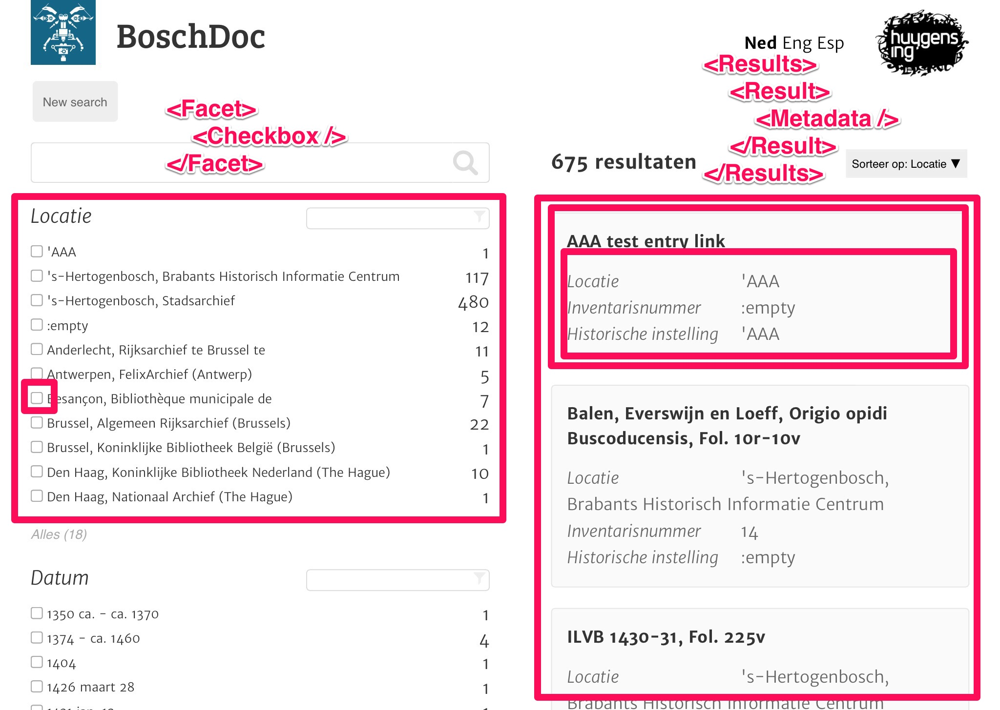

React
Rethinking best practices
What
Library/framework for building UIs
- Components
- Virtual DOM
- Unidirectional data flow
What - Components
What - Components
MVC- Reusable
- Increase cohesion
- Idempotent function
What - Components
class Autocomplete extends React.Component {
componentDidMount() { ... }
componentWillReceiveProps() { ... }
componentWillUnmount() { ... }
handleChange(ev) { ... }
render() {
return (
<div className="autocomplete">
<input onChange={this.handleChange} value={this.state.value} />
<ul className="suggestions">{this.props.suggestions}</ul>
</div>
);
}
}
...
<Autocomplete suggestions={["Bas", "Meindert", "Astrid", ...]} />
What - Virtual DOM
- Data change over time is the root of all evil
- Diffing
- Re-render app on every data change
What - Unidirectional data flow

What - Unidirectional data flow
- Central data store
- Immutability
Why
- "Easy" to wrap your head around
- "Easy" to unit test
- Reusable components
- Speed!
- Large and growing community
Future
- Server side rendering
- Relay & GraphQL
- React Native
- Animations